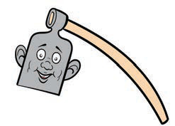
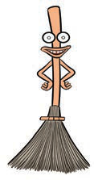
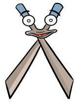
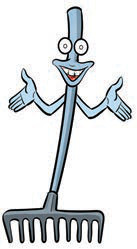
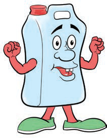

I am a hoe. Use me for digging.

A hoe for digging the soil.
I am a twig broom, I sweep waste away.

A twig broom for sweeping waste away.
I am a pair of garden shears, I cut and trim flowers.

A pair of garden shears for cutting and trimming flowers.
I am a rake. I collect all the rubbish.

A rake for collecting rubbish.
Soap for cleaning and killing germs.
I am soap. Use me to clean and kill germs.